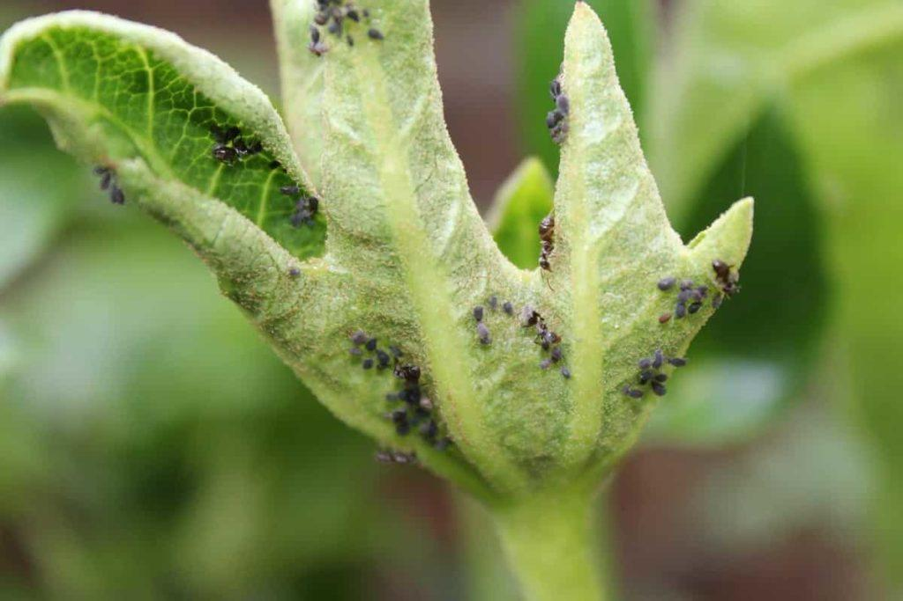
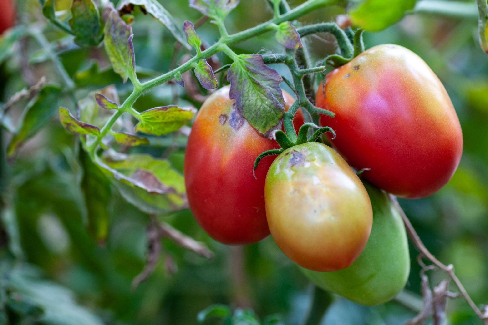

🌿 Welcome to Smart Farming Support

This project helps farmers choose the right pesticide based on crop, soil, weather, and pest conditions.
It is simple, easy to use, and designed for basic understanding.
🌟 Key Features
|
🌾 Crop Analysis Helps select pesticide based on crop type |
🌦 Weather Input Considers weather conditions |
🐛 Pest Detection Based on pest symptoms |
🌱 Benefits for Farmers
- ✔ Reduces wrong pesticide usage
- ✔ Improves crop health
- ✔ Saves time and effort
- ✔ Helps in better decision making
📊 How It Works
| 🌾 Enter Details | ⚙ System Processes | 📋 Get Result |
🐛 Common Pest Examples



Identify pests early to prevent crop damage
👨🌾 Farmer Guidance
- Select crop type
- Check soil condition
- Observe pest symptoms
- Enter details in prediction form
- View recommended pesticide
🎥 Awareness Video
📌 Project Note
This project is created as part of a group assignment. It is a basic system and can be improved further with real data.
🌍 Did You Know?
- 🌱 Overuse of pesticides can damage soil quality
- 🐛 Some pests become resistant to chemicals over time
- 🌾 Proper pesticide use can increase crop yield significantly
📊 Smart Farming Facts
| Topic | Fact |
|---|---|
| Soil Health | Healthy soil improves crop growth naturally |
| Weather | Rain can wash away pesticides |
| Pest Control | Early detection reduces damage |